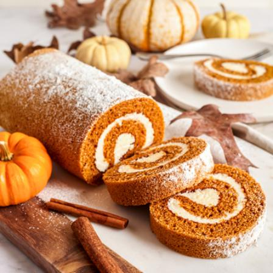

Pumpkin Roll

Description
Dazzle family and friends with Libby's® Pumpkin Roll; moist and creamy, with a tantalizing aroma and beautiful presentation.
Ingredients
- For the Cake: eggs, sugar, pumpkin puree, cinnamon, all-purpose flour, and baking soda>
- For the Filling: cream cheese, confectioners' sugar, butter, and vanilla extract
Baking Instructions
- Bake the Cake: Mix the eggs, sugar, pumpkin, and cinnamon in a bowl.
Mix the flour and baking soda in a separate bowl, then add it to the egg mixture.
Blend the batter until smooth. Spread the batter in a prepared jelly roll pan.
Bake in a preheated oven until the cake springs back when touched.
- Roll the Cake: Invert the cake onto a cotton tea towel.
Let the cake cool for about five minutes.
Roll the cake up in the towel jelly-roll style.
Place the cake seam-side down and allow it to finish cooling.
- Make the Filling: Beat the cream cheese, confectioners' sugar, butter, and vanilla in a mixing bowl until smooth.
- Roll the cake again> When the cake is cool, unroll it and evenly spread with the cream cheese mixture.
Roll the cake up again without the towel. Dust with confectioners' sugar before serving.